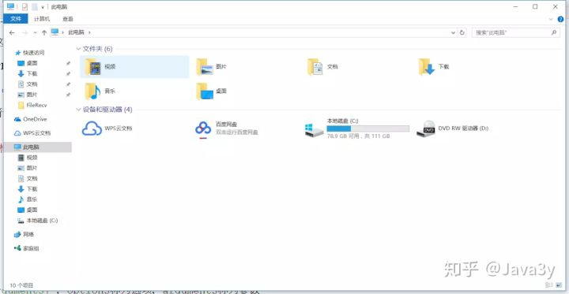
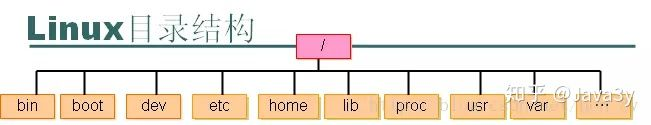

linux基础篇【转】
目录
前言
只有光头才能变强 这篇文章是转载自 知乎 虽然很基础，但是感觉基础篇的总览很全。文中主要整体是介绍了linux 的常用命令的使用。
一、为什么我们要学习Linux
相信大部分人的PC端都是用Windows系统的，那我们为什么要学习Linux这个操作系统呢？？？Windows图形化界面做得这么好，日常基本使用的话，学习成本几乎为零。
而Linux不一样，可能刚接触Linux的人会认为：Linux好麻烦哦，不好玩，都是字符界面。不直观、这个破系统是用来干嘛的
日常用的话Windows是比较顺手的，但是我们要知道的是：我们开发出来的程序一般都是放在Linux下运行的。
那可能就会有人提出疑问了：Windows同样是操作系统，为啥要放在Linux下，而不放在Windows下呢？？相信Windows也是可以运行我们写出来的程序的。
我总结了Linux的几个优点：
- 免费
- 很多软件原生是在Linux下运行的，庞大的社区支持，生态环境好。
- 开源，可被定制，开放，多用户的网络操作系统。
- 相对安全稳定
参考资料：
所以开发者选择了Linux来跑我们自己写出来的程序。
二、Linux的基础知识
Linux系统的组成：
- linux内核（linus 团队管理）
- shell：用户与内核交互的接口
- 文件系统：ext3、ext4等。windows 有 fat32 、ntfs
- 第三方应用软件
2.1Shell的基本知识
除了Shell、其他的都应该挺好懂的，那么Shell是什么东西呢？？？
Shell是系统的用户界面，提供了用户与内核进行交互操作的一种接口(命令解释器)
Shell可以执行：
- 内部命令
- 应用程序
- shell脚本

使用type命令可以区分内部命令和外部命令
于是乎，我们利用Shell就可以干下面这些事了：
- 命令行解释(这是用得最多的！)
- 命令的多种执行顺序
- 通配符（ wild-card characters ）
- 命令补全、别名机制、命令历史
- I/O重定向（ Input/output redirection ）
- 管道（ pipes ）
- 命令替换（ 或$( ) ）
- Shell编程语言（ Shell Script ）
Shell的主要版本有以下这么多：
- 我们常用(默认)的就是bash(bourne again shell)

使用ps命令观察正在执行的shell
2.2Linux基本目录结构
在Windows下，会有基本的目录结构的：

Linux下也不例外了，也是有基本的目录结构的：

Linux 文件系统是一个目录树的结构，文件系统结构从一个根目录开始，根目录下可以有任意多个文件和子目录，子目录中又可以有任意多个文件和子目录
- bin 存放二进制可执行文件(ls,cat,mkdir等)
- boot 存放用于系统引导时使用的各种文件
- dev 用于存放设备文件
- etc 存放系统配置文件
- home 存放所有用户文件的根目录
- lib 存放跟文件系统中的程序运行所需要的共享库及内核模块
- mnt 系统管理员安装临时文件系统的安装点
- opt 额外安装的可选应用程序包所放置的位置
- proc 虚拟文件系统，存放当前内存的映射
- root 超级用户目录
- sbin 存放二进制可执行文件，只有root才能访问
- tmp 用于存放各种临时文件
- usr 用于存放系统应用程序，比较重要的目录/usr/local 本地管理员软件安装目录
- var 用于存放运行时需要改变数据的文件
2.3命令基本格式
cmd [options] [arguments]，options称为选项，arguments称为参数
选项和参数都作为Shell命令执行时的输入，它们之间用空格分隔开。
- Linux是区分大小写的
一般来说，后面跟的选项如果单字符选项前使用一个减号-。单词选项前使用两个减号--
- 这是一般的情况，有些命令还是不归属这种规律的(相对较少)
- 例子：
ls -a和ls -all，a单个字符使用一个-，一个单词all使用两个--
在Linux中，可执行的文件也进行了分类：
- 内置命令：出于效率的考虑，将一些常用命令的解释程序构造在Shell内部。
- 外置命令：存放在/bin、/sbin目录下的命令
- 实用程序：存放在/usr/bin、/usr/sbin、/usr/share、/usr/local/bin等目录下的实用程序
- 用户程序：用户程序经过编译生成可执行文件后，可作为Shell命令运行
- Shell脚本：由Shell语言编写的批处理文件，可作为Shell命令运行
2.4通配符
学过一些正则表达式的或者有点基础的同学对通配符应该就不陌生的了，在Linux也有通配符(在搜索的时候挺有用的)
- *：匹配任何字符和任何数目的字符
- ?：匹配单一数目的任何字符
- ：匹配[ ]之内的任意一个字符
- [! ]：匹配除了[! ]之外的任意一个字符，!表示非的意思
2.5文件的类型
在Linux下文件的类型有这么多：
普通文件
-目录
d符号链接
l- 硬链接： 与普通文件没什么不同，inode 都指向同一个文件在硬盘中的区块
- 软链接： 保存了其代表的文件的绝对路径，是另外一种文件，在硬盘上有独立的区块，访问时替换自身路径(简单地理解为 Windows 中常见的快捷方式)。
- 硬链接： 与普通文件没什么不同，inode 都指向同一个文件在硬盘中的区块
字符设备文件
c块设备文件
b套接字
s命名管道
p
我们常见的就是普通文件，目录和符号链接。其他的了解一下即可
符号链接参考资料：
2.5.1用户主目录
可能在网上查阅资料的时候会出现用户主目录这么一个名词，那他是什么呢？？？
前面已经说了，我们的Linux是多用户的网络系统！所以，我们可以在Linux下创建多个用户，每个用户都会有自己专属的空间。
- 所以，在创建用户时，系统管理员会给每个用户建立一个主目录，通常在
/home/目录下 - 比如：用户osmond的主目录为：
/home/osmond
用户对自己主目录的文件拥有所有权，可以在自己的主目录下进行相关操作。
三、常用的命令
上面说了一堆的基础概念，这是给我们敲命令之前打了一点基础，在敲命令的同时也会遇到一些比较重要的知识点的。那就到时候再说说了
3.1常用的文件、目录操作命令
这是我们使用得最多的命令了，Linux最基础的命令！
- 可用
pwd命令查看用户的当前目录 - 可用
cd命令来切换目录 .表示当前目录..表示当前目录的上一级目录（父目录）-表示用 cd 命令切换目录前所在的目录~表示用户主目录的绝对路径名
绝对路径：
- 以斜线（/）开头 ，描述到文件位置的完整说明 ，任何时候你想指定文件名的时候都可以使用
相对路径 ：
- 不以斜线（/）开头 ，指定相对于你的当前工作目录而言的位置 ，可以被用作指定文件名的简捷方式
tips:输入命令的时候要常用tab键来补全
ls：显示文件或目录信息mkdir：当前目录下创建一个空目录rmdir：要求目录为空touch：生成一个空文件或更改文件的时间cp：复制文件或目录mv：移动文件或目录、文件或目录改名rm：删除文件或目录ln：建立链接文件find：查找文件file/stat：查看文件类型或文件属性信息cat：查看文本文件内容more：可以分页看less：不仅可以分页，还可以方便地搜索，回翻等操作tail -10： 查看文件的尾部的10行head -20：查看文件的头部20行echo：把内容重定向到指定的文件中 ，有则打开，无则创建管道命令 |：将前面的结果给后面的命令，例如：ls -la | wc，将ls的结果加油wc命令来统计字数重定向 > 是覆盖模式，>> 是追加模式，例如：echo "Java3y,zhen de hen xihuan ni" > qingshu.txt把左边的输出放到右边的文件里去
学了这些命令我们能干嘛？其实就是在Windows下复制文件、粘贴文件、创建文件、查看文件这几种
3.1.1常用的文件、目录操作练习题
巩固一下基础，来做做题目：
- （1）Linux的shell程序默认是
bash 程序； - （2）Linux命令格式包含三个部分，分别是：
命令、选项、参数； - （3）Linux命令选项前为单个减号（-），后面一般为
单字符，选项前为双减号（–），后面一般为单词； - （4）Linux命令中使用的通配符有
？ * []； - （5）命令 ls /usr/bin/w* 的效果是
列出指定目录下的所有以w开头的文件或目录； - （6）命令 ls /usr/bin/w?? 的效果是
列出指定目录下的以w开头名称长度为3的所有文件或目录； - （7）命令 ls /usr/bin/[xyz]* 的效果是
列出指定目录下的文件名以x或y或z开头的所有文件或目录； - （8）命令 ls /usr/bin/[!a-h]* 的效果是
列出指定目录下的文件名不以a到h区间字母开头的所有文件或目录； - （9）目录操作时，“.” 表示
当前目录； - （10）目录操作时，“..” 表示
上一级目录； - （11）目录操作时，“-” 表示
上一次工作目录； - （12）目录操作时，“~” 表示
用户主目录； - （13）命令ln可以建立文件链接，这种链接分为：
硬链接和软链接； - （14）命令touch可以改变文件的三种时间，分别是：
access time、modify time、change time；
进入/tmp目录，建立一个文件，goldXX（XX为学号的末两位），查看文件的时间
在账户的主目录中，建立一个dog目录，进入dog目录后，建立一个catXX（XX为学号的末两位）目录,进入catXX目录，显示当前目录；然后返回上一级目录，删除catXX目录；
复制/etc/passwd文件到账户主目录，修改账户主目录下passwd为passwdXX（XX为学号的末两位）
查找文件名叫做zcat的文件；复制该文件到/tmp目录；用长格式列出该文件；然后删除/tmp目录下的所有文件，并检查文件是否已被删除
复制/etc/hosts文件到账户主目录下；在账户主目录中建立一个硬链接文件（文件名为hostsYYY（YYY为学生姓名拼音缩写）），链接到主目录下的hosts文件；分别查看hosts和hostsYYY的文件的inode信息
复制/usr/bin/vdir文件到账户主目录下；在账户主目录中建立一个软链接文件（文件名为newdir），链接到主目录下的vdir文件；分别查看vdir和newdir的文件的inode信息
用长格式列出目录/usr/bin目录下的所有文件，输出重新定向到文件outXX（XX为学生学号末两位），检查结果；用长格式列出目录/etc目录下的所有文件，输出结果补充到文件outXX末尾
用长格式列出/usr/bin目录下的所有文件，通过管道与more命令连接，实现对文件列表的浏览
>和>>有何区别？
答：>是覆盖方式重定向到新的文件；>>是以补充方式，添加到原文件的末尾。
通过管道和more命令，浏览文件列表方便在哪里？
答：对于文件列表超出一个屏幕显示的情况，这种方式可以分屏浏览，比较方便。
3.2文件打包和压缩命令
在Windows操作系统下，我们会使用WinRAR或者快压等等的压缩软件来进行压缩或者解压。
在Linux下当然也存在压缩或解压的操作咯，下面我们就来学习一下在Linux下是怎么压缩和解压的！

压缩的方式也是有好几种，我们常用的有下面这三种：
- gzip
- bzip2
- tar
常用的压缩的命令就有：
gzip filenamebzip2 filenametar -czvf filename
常用的解压命令有：
gzip -d filename.gzbzip2 -d filename.bz2tar -xzvf filename.tar.gz
3.3正则表达式+grep
上面我们已经学过了cat、more、less、tail这些查看文本文件的命令了，但是我想快速查看这个文本文件下的某些关键字是否存在，那怎么办？？？
在Windows下就比较简单的，几乎所有的文本编辑器(记事本)都支持CTRL+F，往里面输入关键字就可查找出来：

那在Linux下，没有图形界面，没有CTRL+F的情况下，如果不懂一些命令的话，那还真是难找对应的字符出来。下面我就来说说如何快速查找一个文本文件下的某些字符。
3.3.1正则表达式
首先我们就来说说正则表达式，如果接触过的同学就知道：这玩意并不好记。一旦不用就很容易就忘记了，所以只能在用的时候查查了所以下面我就直接给出一些规则了，不多说啦。


3.3.2grep命令
grep(global search regular expression)是一个强大的文本搜索工具。grep 使用正则表达式搜索文本，并把匹配的行打印出来。
格式：grep [options] PATTERN [FILE...]
- PATTERN 是查找条件：可以是普通字符串、可以是正则表达式，通常用单引号将RE括起来。
- FILE 是要查找的文件，可以是用空格间隔的多个文件，也可是使用Shell的通配符在多个文件中查找PATTERN，省略时表示在标准输入中查找。
- grep命令不会对输入文件进行任何修改或影响，可以使用输出重定向将结果存为文件
例子：
在文件 myfile 中查找包含字符串 mystr的行
grep -n mystr myfile
显示 myfile 中第一个字符为字母的所有行
grep '^[a-zA-Z]' myfile
在文件 myfile 中查找首字符不是 # 的行（即过滤掉注释行）
grep -v '^#' myfile
列出/etc目录（包括子目录）下所有文件内容中包含字符串“root”的文件名
grep -lr root /etc/*
用grep查找/etc/passwd文件中以a开头的行，要求显示行号；查找/etc/passwd文件中以login结束的行；
3.4几种提高工作效率的方法
自动补全命令
- TAB键
历史命令
- 上下箭头键
别名alias
这里感觉要说说的就只有别名alias了，我们下面看看例子就懂了！
显示shell当前已经定义的别名；执行其中的两个定义别名的命令；定义一个别名grep，要求其采用彩色方式显示结果

3.5Shell变量 和 Shell环境
在Windows下有用户的环境变量，系统的环境变量。在Linux一样也是有的。
Shell 变量大致可以分为三类：
内部变量：由系统提供，用户只能使用不能修改。
- ?
- GROUPS
- ?
环境变量：这些变量决定了用户工作的环境，它们不需要用户去定义，可以直接在 shell 中使用，其中某些变量用户可以修改。
用户变量：由用户建立和修改，在 shell 脚本编写中会经常用到。
变量赋值（定义变量）
varName=Valueexport varName=Value
引用变量
$varName
Shell变量的作用域：
- 局部变量的作用范围仅仅限制在其命令行所在的Shell或Shell脚本文件中；
- 全局变量的作用范围则包括本Shell进程及其所有子进程。
- 局部变量与全局变量互换：可以使用
export内置命令将局部变量设置为全局变量。 可以使用export内置命令将全局变量设置为局部变量。
export命令：
显示当前Shell可见的全局变量
export [-p]
定义变量值的同时声明为全局变量。
export <变量名1=值1> [<变量名2=值2> ...]
声明已经赋值的某个（些）局部变量为全局变量。
export <变量名1> [<变量名2> ...]
声明已经赋值的某个（些）全局变量为局部变量。
export -n <变量名1> [<变量名2> ...]
Shell环境变量：
- 环境变量定义 Shell 的运行环境，保证 Shell 命令的正确执行。
- Shell用环境变量来确定查找路径、注册目录、终端类型、终端名称、用户名等。
- 所有环境变量都是全局变量（即可以传递给 Shell 的子进程），并可以由用户重新设置。

Shell变量：查询、显示和取消：
显示当前已经定义的所有变量
- 所有环境变量：
env- 所有变量和函数（包括环境变量） ：
set
- 所有变量和函数（包括环境变量） ：
- 所有环境变量：
显示某（些）个变量的值
echo $NAME1 [$NAME2 ……]
取消变量的声明或赋值
unset <NAME>
3.5.1Shell变量 和 Shell环境练习题
定义Shell变量stuXX（XX为学生学号末两位），初值为学生姓名全拼，用echo命令显示stuXX变量的值；用unset命令取消stuXX变量，检查结果；用env命令观察当前有哪些已经定义好的shell环境变量
Shell环境变量的值是否可以修改？为什么？
答：环境变量的值一般情况下，可以修改。但一定要慎重修改，因为一旦修改错误，对shell正常运行造成严重影响，甚至导致shell无法运行。
四、VI编辑器
相信没有用过Linux的同学在看一些段子的时候都会看到过两个编辑器：
- vim
- emacs
下面我们学习如何简单使用vi。vi 是 “Visual interface” 的简称，它可以执行输出、删除、查找、替换、块操作等众多文本操作，而且用户可以根据自己的需要对其进行定制，这是其他编辑程序所没有的。
- vi可以看做成我们Windows下的记事本
- vim 即 Vi IMproved，vi 克隆版本之一
使用Vi来编辑文件：

Vi有三种模式：
4.1普通模式
G用于直接跳转到文件尾ZZ用于存盘退出ViZQ用于不存盘退出Vi/和？用于查找字符串n继续查找下一个yy复制一行p粘帖在下一行，P粘贴在前一行dd删除一行文本x删除光标所在的字符u取消上一次编辑操作（undo）
4.2插入模式
在 Normal 模式下输入插入命令 i、 a 、 o进入insert模式。用户输入的任何字符都被vim当做文件内容保存起来，并将其显示在屏幕上。
- 在文本输入过程中，若想回到Normal模式下，按 Esc 键即可。
4.3命令行模式
Normal 模式下，用户按冒号 :即可进入 Command 模式，此时 vim 会在显示窗口的最后一行 (屏幕的最后一行) 显示一个 “:” 作为 Command 模式的提示符，等待输入命令。
:w保存当前编辑文件，但并不退出:wnewfile 存为另外一个名为 “newfile” 的文件:wq用于存盘退出Vi:q!用于不存盘退出Vi:q用于直接退出Vi （未做修改）
设置Vi环境:
- :set autoindent 缩进,常用于程序的编写
- :set noautoindent 取消缩进
- :set number 在编辑文件时显示行号
- :set nonumber 不显示行号
- :set tabstop=value 设置显示制表符的空格字符个数
- :set 显示设置的所有选项
- :set all 显示所有可以设置的选项
4.4Vi练习题
在用户主目录下，执行vi程序，编辑文件install.log；移动光标到第10行，第五个字符；按大写字母G，达到文件末尾；不存盘退出；
在用户主目录下，执行vi程序，编辑文件install.log；用/命令查找字符串sudo，复制包含字符串sudo的行
在用户主目录下，执行vi程序，编辑文件install.log；进入命令模式，设置显示行号；用？命令查找字符串openssh，用命令n查找下一个